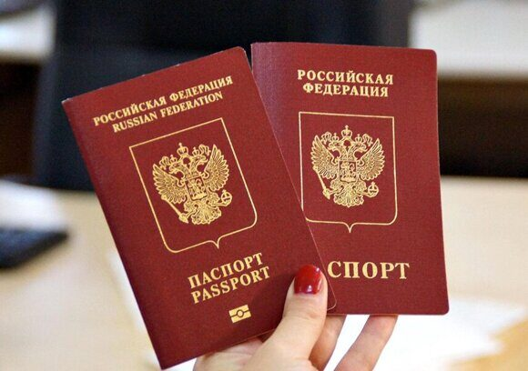

« НазадВыбор между биометрическим загранпаспортом и заграном старого образца С развитием технологий и изменением международных стандартов оформление загранпаспорта претерпевает существенные изменения. В 2025 году у граждан России имеется возможность выбрать между двумя основными типами загранпаспорта – старого образца и биометрическим паспортом нового поколения. Каждый из вариантов имеет свои преимущества и особенности, которые важно учитывать при планировании зарубежных поездок. В этой статье подробно рассмотрены основные отличия, этапы оформления, стоимость, сроки и рекомендации по выбору загранпаспорта. Виды загранпаспортовВ настоящее время существуют две основные категории заграничных паспортов: Загранпаспорт старого образцаСрок действия: 5 лет. Количество страниц: 36. Возможность вписать детей: Раньше можно было вписывать, но сейчас уже каждый ребенок должен иметь свой загранпаспорт. Госпошлина: 2000 руб. для взрослых и 1000 руб. для детей. Особенности: Не содержит электронного чипа, оформление происходит быстрее, фотография наклеивается (бумажное фото), что упрощает процедуру для граждан, не планирующих частые поездки. Биометрический загранпаспорт нового поколенияСрок действия: 10 лет. Количество страниц: 46. Возможность вписать детей: Нет (на каждого ребенка необходимо оформлять отдельный паспорт). Госпошлина: 6000 руб. для взрослых и 3000 руб. для детей. Особенности: Содержит электронный чип с биометрическими данными (цифровое фото, отпечатки пальцев), что позволяет автоматизировать процедуру чтения данных на границе и обеспечивает более высокий уровень защиты от подделок. Преимущества загранпаспорта старого образцаЗагранпаспорт старого образца остается востребованным вариантом для определённых категорий граждан. Его основные преимущества включают: Более низкая стоимость:
Возможность вписать детей:
Упрощённая процедура оформления:
Быстрота оформления в срочных случаях:
Преимущества биометрического загранпаспортаБиометрический паспорт нового поколения обладает рядом преимуществ, которые делают его выбор предпочтительным для многих путешественников: Продленный срок действия:
Больше страниц:
Высокий уровень защиты и безопасности:
Соответствие международным стандартам:
Стоимость и сроки оформления паспортаПри выборе между двумя вариантами стоит изначально учитывать не только технологические особенности, но и финансовые аспекты, а также сроки оформления. Стоимость оформления: Для паспорта старого образца госпошлина составляет:
Для биометрического паспорта новая ставка госпошлины:
Сроки получения: При оформлении по месту регистрации:
При подаче по месту временного пребывания или при отсутствии регистрации:
Также стоит отметить, что ускоренное оформление (в некоторых случаях до 3 дней) возможно для граждан, имеющих уважительные причины (например, срочное лечение или смерть близкого человека). Процедура оформления загранпаспортаОформление загранпаспорта проходит по определённой схеме, вне зависимости от выбранного типа. Рассмотрим основные этапы подачи заявки: 1. Выбор типа паспорта:Перед подачей документов необходимо определиться с выбранным вариантом. При выборе паспорта стоит учитывать:
2. Сбор необходимых документов:Для оформления паспорта старого образца вы, как правило, предоставляете:
Для биометрического паспорта, кроме перечисленных документов, добавляются следующие моменты: Документ, подтверждающий подачу заявления через портал «Госуслуги» или личное обращение в МФЦ/отделение МВД. Сдача биометрических данных: цифровое фото производится сотрудником МВД, а также снимаются отпечатки пальцев (обязательное показательное присутствие граждан, начиная с определённого возраста). 3. Подача заявления:Подачу документов можно осуществлять следующими способами:
4. Оплата госпошлины:Оплата производится через:
5. Сдача биометрических данных (только для нового образца):При оформлении биометрического паспорта гражданам необходимо лично посещать отделение МВД для:
6. Получение загранпаспорта:После завершения проверки документов и изготовления загранпаспорта гражданин получает уведомление. Затем следует посещение отделения, где выдается готовый документ. Когда выбирать старый образец, а когда – биометрический?Выбор между биометрическим загранпаспортом и паспортом старого образца зависит от ваших личных потребностей, финансовых возможностей и стиля путешествий. Выбирайте загранпаспорт старого образца, если: Вы не планируете частые заграничные поездки и хотите сэкономить на госпошлине. Вам важна оперативность оформления в срочных случаях (при наличии уважительной причины паспорт можно получить за несколько дней). Изменения личных данных (например, смена фамилии) происходят достаточно часто, и вам удобнее обновлять документ с меньшими затратами. Отдавайте предпочтение биометрическому паспорту, если: Вы планируете регулярно ездить за границу – паспорт действует 10 лет, а его количество страниц (46 штук) позволяет размещать больше виз и штампов. В поездках вы посещаете страны, где требования предъявляются именно к биометрическим паспортам. Вам важен повышенный уровень защиты документа от подделок. Вы хотите воспользоваться преимуществами ускоренного контроля на границе благодаря встроенному чипу. Документы, необходимые для оформленияНезависимо от того, какой тип паспорта вы выберете, список документов остаётся схожим. Важно внимательно подготовить все необходимые бумаги, чтобы избежать отказов в оформлении: Основной документ гражданина:
Заполненное заявление:
Оплата госпошлины:
Фотографии:
Дополнительные документы:
Порядок оформления через «Госуслуги»Оформление загранпаспорта через портал «Госуслуги» становится всё более популярным, так как позволяет сократить время на оформление и снизить риск ошибок. Основные шаги следующие: Регистрация и вход в личный кабинет:
Заполнение заявления:
Выбор подразделения УВМ МВД:
Оплата госпошлины онлайн:
Ожидание и получение документа:
Практические рекомендации по выбору загранпаспортаПри принятии решения необходимо учитывать несколько аспектов: Регулярность поездок:
Семейные обстоятельства:
Безопасность и скорость прохождения границы:
Изменения личных данных:
Часто задаваемые вопросыВ чем главное отличие между загранпаспортом старого образца и биометрическим паспортом? Основное отличие заключается в наличии встроенного электронного чипа в биометрическом паспорте, который содержит цифровое фото и отпечатки пальцев, повышая уровень защиты и ускоряя процедуры контроля на границе. Кроме того, биометрический паспорт действителен в 10 лет и имеет больше страниц. Можно ли вписать данные о детях в загранпаспорт? Нет, загранпаспорт старого образца уже не предоставляет возможность вписать данные о детях до 14 лет, для семей. В биометрическом паспорте такая возможность тоже отсутствует, поэтому для каждого ребенка требуется оформлять отдельное свидетельство. Как влияет выбор типа паспорта на стоимость оформления? Стоимость оформления существенно различается. Госпошлина за загранпаспорт старого образца составляет 2000 руб. для взрослых и 1000 руб. для детей, тогда как за биометрический паспорт – 6000 руб. для взрослых и 3000 руб. для детей. Дополнительная стоимость оправдывается продленным сроком действия и повышенными технологиями. Какие сроки оформления можно ожидать в 2025 году? Срок оформления загранпаспорта по месту регистрации обычно составляет до 1 месяца. Если документы подаются не по месту постоянной регистрации, время оформления может увеличиться до 3 месяцев. При наличии уважительной причины возможен срочный режим (до 3 дней). Какие документы необходимы для оформления загранпаспорта? В перечень входят паспорт гражданина РФ, заявление (в двух экземплярах), квитанция об оплате госпошлины, фотографии стандартного размера, а также дополнительные документы для несовершеннолетних и военнослужащих (при необходимости). Для биометрического паспорта дополнительно необходимо пройти процедуру сдачи биометрических данных. Что делать, если требуется срочная поездка? В случае срочной необходимости возможна процедура ускоренного оформления загранпаспорта старого образца, при которой документ можно получить за несколько дней. При этом важно иметь подтверждающие документы (например, справку о тяжелом заболевании или смерти близкого). ЗаключениеВыбор между загранпаспортом старого образца и биометрическим паспортом нового поколения – это прежде всего вопрос личных приоритетов и специфики предполагаемых заграничных поездок. Если вы цените длительный срок действия, повышенный уровень защиты, возможность быстрого прохождения паспортного контроля и комфорт при регулярных поездках, биометрический паспорт становится оптимальным выбором. С другой стороны, для граждан с ограниченным бюджетом, не срочными зарубежными путешествиями и необходимостью вписывать данные о детях удобнее оформить паспорт старого образца. При оформлении любого из документов важно следовать установленной процедуре, своевременно собирать и проверять документы, учитывать сроки и правильно оплачивать госпошлину. Современные сервисы, такие как портал «Госуслуги» и помощь специалистов МФЦ или визовых центров, позволяют оптимизировать процесс оформления, что особенно важно в условиях меняющихся требований и законодательства. Понимание ключевых отличий, преимуществ и недостатков каждого из паспортов поможет гражданам принимать обоснованные решения. Взвесьте все «за» и «против», учитывайте личные обстоятельства, цели поездки и финансовые возможности. Независимо от выбора, оба вида загранпаспортов обеспечивают законное пересечение границы и подтверждение личности на международном уровне. Нужно оформить загранпаспорт быстро? Доверьтесь профессионалам «Север»!Нужен загранпаспорт в кратчайшие сроки? Паспортно-визовый центр «Север» гарантирует срочное оформление загранпаспорта в Москве всего за считанные дни! Более 25 лет опыта и удобное расположение в центре столицы позволяют нам обеспечить оперативное, профессиональное и качественное обслуживание даже в самых нестандартных ситуациях. Мы помогаем решить любые вопросы, связанные с оформлением документов – от заполнения заявлений до сдачи биометрических данных. Позвоните по телефону +7 925 585-41-95 и получите свою возможность открыть мир без задержек! |
Комментарии
Комментариев пока нет